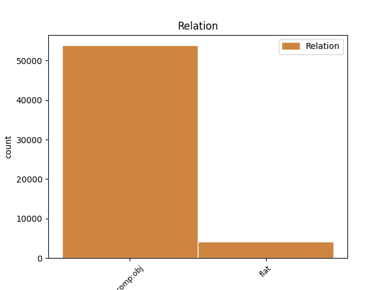
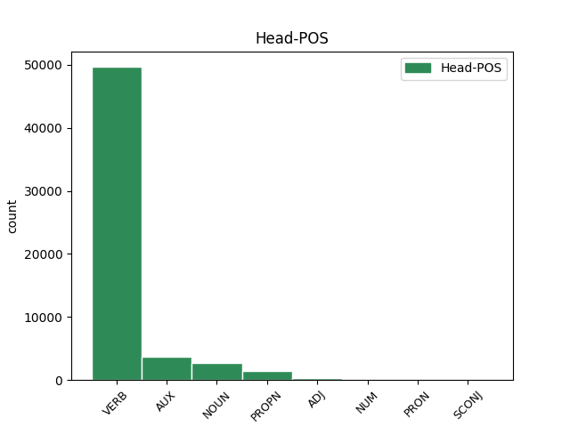
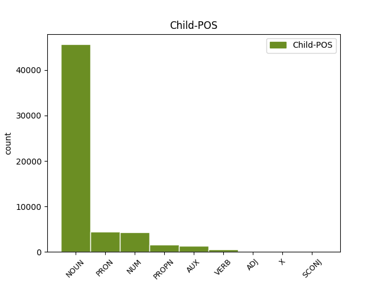

Distribution of features within this leaf



Agreement Rules sorted by frequency.
- When the dependent token is the direct object complements(comp:obj) of the head token,
1 Iomega _ _ _ _ 0 _ _ _
2 , _ _ _ _ 0 _ _ _
3 Spezialist _ _ _ _ 0 _ _ _
4 für _ _ _ _ 0 _ _ _
5 Speicherlösungen _ _ _ _ 0 _ _ _
6 , _ _ _ _ 0 _ _ _
7 liefert liefern VERB VVFIN Mood=Ind|Number=Sing|Person=3|Tense=Pres|VerbForm=Fin 0 _ _ _
8 nun _ _ _ _ 0 _ _ _
9 seinen _ _ _ _ 0 _ _ _
10 portablen _ _ _ _ 0 _ _ _
11 CD-RW-Brenner Brenner NOUN NN Gender=Masc|Number=Sing|Person=3 7 comp:obj _ _
12 Predator _ _ _ _ 0 _ _ _
13 in _ _ _ _ 0 _ _ _
14 den _ _ _ _ 0 _ _ _
15 USA _ _ _ _ 0 _ _ _
16 aus _ _ _ _ 0 _ _ _
17 . _ _ _ _ 0 _ _ _
1 Nachdem _ _ _ _ 0 _ _ _
2 die _ _ _ _ 0 _ _ _
3 CDU _ _ _ _ 0 _ _ _
4 das _ _ _ _ 0 _ _ _
5 Bundesland _ _ _ _ 0 _ _ _
6 Nordrhein-Westfalen _ _ _ _ 0 _ _ _
7 bereits _ _ _ _ 0 _ _ _
8 zum _ _ _ _ 0 _ _ _
9 Internet-Standort _ _ _ _ 0 _ _ _
10 Nr. Nummer NOUN NN Case=Dat|Gender=Fem|Number=Sing|Person=3 0 _ _ _
11 1 1 NUM CARD Number=Sing|NumType=Card|Person=3 10 flat _ _
12 in _ _ _ _ 0 _ _ _
13 Deutschland _ _ _ _ 0 _ _ _
14 machen _ _ _ _ 0 _ _ _
15 will _ _ _ _ 0 _ _ _
16 , _ _ _ _ 0 _ _ _
17 möchte _ _ _ _ 0 _ _ _
18 sie _ _ _ _ 0 _ _ _
19 nun _ _ _ _ 0 _ _ _
20 auch _ _ _ _ 0 _ _ _
21 Deutschland _ _ _ _ 0 _ _ _
22 im _ _ _ _ 0 _ _ _
23 weltweiten _ _ _ _ 0 _ _ _
24 Vergleich _ _ _ _ 0 _ _ _
25 nach _ _ _ _ 0 _ _ _
26 vorne _ _ _ _ 0 _ _ _
27 bringen _ _ _ _ 0 _ _ _
28 . _ _ _ _ 0 _ _ _
Disagree Examples:
1 Die _ _ _ _ 0 _ _ _
2 Marktchancen Chance NOUN NN Gender=Fem|Number=Plur|Person=3 5 comp:obj _ _
3 für _ _ _ _ 0 _ _ _
4 Powerline _ _ _ _ 0 _ _ _
5 schätzt schätzen VERB VVFIN Mood=Ind|Number=Sing|Person=3|Tense=Pres|VerbForm=Fin 0 _ _ _
6 die _ _ _ _ 0 _ _ _
7 Studie _ _ _ _ 0 _ _ _
8 hingegen _ _ _ _ 0 _ _ _
9 geringer _ _ _ _ 0 _ _ _
10 ein _ _ _ _ 0 _ _ _
11 : _ _ _ _ 0 _ _ _
12 fünf _ _ _ _ 0 _ _ _
13 Millionen _ _ _ _ 0 _ _ _
14 Haushalte _ _ _ _ 0 _ _ _
15 sollen _ _ _ _ 0 _ _ _
16 2010 _ _ _ _ 0 _ _ _
17 über _ _ _ _ 0 _ _ _
18 die _ _ _ _ 0 _ _ _
19 Steckdose _ _ _ _ 0 _ _ _
20 surfen _ _ _ _ 0 _ _ _
21 . _ _ _ _ 0 _ _ _
1 Außer _ _ _ _ 0 _ _ _
2 Internetzugängen _ _ _ _ 0 _ _ _
3 via _ _ _ _ 0 _ _ _
4 Richtfunk _ _ _ _ 0 _ _ _
5 ( _ _ _ _ 0 _ _ _
6 Wireless _ _ _ _ 0 _ _ _
7 Local _ _ _ _ 0 _ _ _
8 Loop _ _ _ _ 0 _ _ _
9 , _ _ _ _ 0 _ _ _
10 WLL _ _ _ _ 0 _ _ _
11 ) _ _ _ _ 0 _ _ _
12 bot bieten VERB VVFIN Mood=Ind|Number=Sing|Person=3|Tense=Past|VerbForm=Fin 0 _ _ _
13 Landtel _ _ _ _ 0 _ _ _
14 unter _ _ _ _ 0 _ _ _
15 anderem _ _ _ _ 0 _ _ _
16 auch _ _ _ _ 0 _ _ _
17 Telefondienste Dienst NOUN NN Gender=Masc|Number=Plur|Person=3 12 comp:obj _ _
18 ( _ _ _ _ 0 _ _ _
19 Preselection _ _ _ _ 0 _ _ _
20 ) _ _ _ _ 0 _ _ _
21 an _ _ _ _ 0 _ _ _
22 . _ _ _ _ 0 _ _ _
1 Die _ _ _ _ 0 _ _ _
2 RegTP _ _ _ _ 0 _ _ _
3 erteilte _ _ _ _ 0 _ _ _
4 die _ _ _ _ 0 _ _ _
5 Genehmigung _ _ _ _ 0 _ _ _
6 , _ _ _ _ 0 _ _ _
7 weil _ _ _ _ 0 _ _ _
8 ihr ihr PRON PPER Case=Dat|Gender=Fem|Number=Sing|Person=3|PronType=Prs 15 comp:obj _ _
9 die _ _ _ _ 0 _ _ _
10 bisher _ _ _ _ 0 _ _ _
11 vorliegenden _ _ _ _ 0 _ _ _
12 Daten _ _ _ _ 0 _ _ _
13 nicht _ _ _ _ 0 _ _ _
14 ausreichend _ _ _ _ 0 _ _ _
15 erschienen erscheinen VERB VVFIN Mood=Ind|Number=Plur|Person=3|Tense=Past|VerbForm=Fin 0 _ _ _
16 , _ _ _ _ 0 _ _ _
17 um _ _ _ _ 0 _ _ _
18 das _ _ _ _ 0 _ _ _
19 XXL-Angebot _ _ _ _ 0 _ _ _
20 abschließend _ _ _ _ 0 _ _ _
21 beurteilen _ _ _ _ 0 _ _ _
22 zu _ _ _ _ 0 _ _ _
23 können _ _ _ _ 0 _ _ _
24 . _ _ _ _ 0 _ _ _
1 Das _ _ _ _ 0 _ _ _
2 Papier _ _ _ _ 0 _ _ _
3 verlor verlieren VERB VVFIN Mood=Ind|Number=Sing|Person=3|Tense=Past|VerbForm=Fin 0 _ _ _
4 heute _ _ _ _ 0 _ _ _
5 zehn _ _ _ _ 0 _ _ _
6 Prozent Prozent NOUN NN Gender=Neut|Number=Plur|Person=3 3 comp:obj _ _
7 an _ _ _ _ 0 _ _ _
8 Wert _ _ _ _ 0 _ _ _
9 und _ _ _ _ 0 _ _ _
10 sackte _ _ _ _ 0 _ _ _
11 mit _ _ _ _ 0 _ _ _
12 knapp _ _ _ _ 0 _ _ _
13 unter _ _ _ _ 0 _ _ _
14 29 _ _ _ _ 0 _ _ _
15 Euro _ _ _ _ 0 _ _ _
16 auf _ _ _ _ 0 _ _ _
17 den _ _ _ _ 0 _ _ _
18 tiefsten _ _ _ _ 0 _ _ _
19 Stand _ _ _ _ 0 _ _ _
20 seit _ _ _ _ 0 _ _ _
21 zwei _ _ _ _ 0 _ _ _
22 Jahren _ _ _ _ 0 _ _ _
23 . _ _ _ _ 0 _ _ _
1 Der _ _ _ _ 0 _ _ _
2 Nemax50 _ _ _ _ 0 _ _ _
3 verlor verlieren VERB VVFIN Mood=Ind|Number=Sing|Person=3|Tense=Past|VerbForm=Fin 0 _ _ _
4 seit _ _ _ _ 0 _ _ _
5 heute _ _ _ _ 0 _ _ _
6 Morgen _ _ _ _ 0 _ _ _
7 knapp _ _ _ _ 0 _ _ _
8 fünf _ _ _ _ 0 _ _ _
9 Prozent Prozent NOUN NN Gender=Neut|Number=Plur|Person=3 3 comp:obj _ _
10 . _ _ _ _ 0 _ _ _